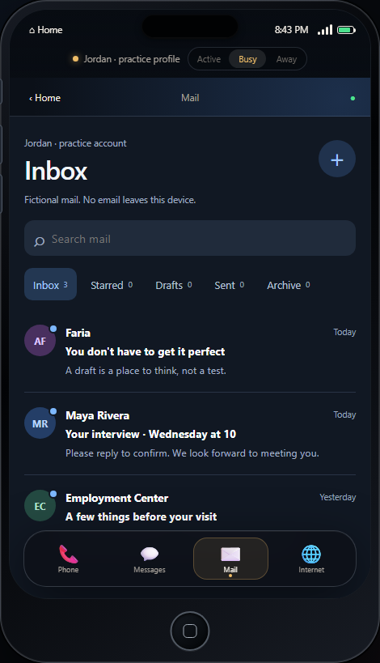
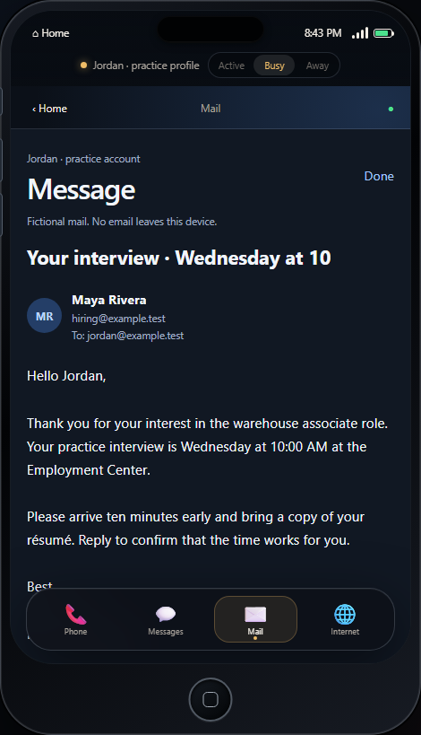
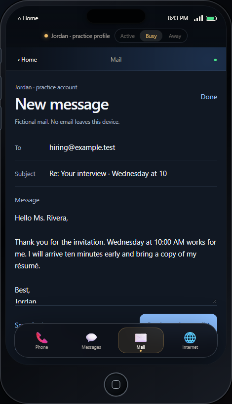
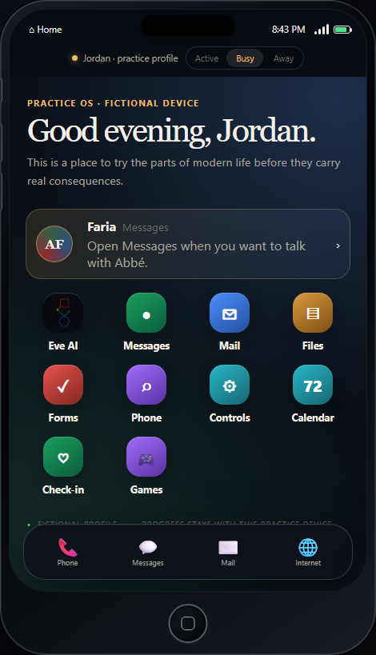

Eve AI
Conversational guidance designed to explain, ask useful questions, cite approved material, and stay within scope.
 Abbé Faria
Request a demo
Abbé Faria
Request a demo
The experience
Abbé Faria combines guided digital-literacy learning, fictional life workflows, and bounded AI assistance so a learner can try, make mistakes, ask for help, and try again.
This reference simulation demonstrates the experience while the production path remains institution-approved, locally governed, and evidence-led.
Inside the experience
The interface borrows the ordinary language of a phone and turns it into structured practice. Each tool can be limited to a fictional scenario, an approved lesson, and a measurable objective.
Conversational guidance designed to explain, ask useful questions, cite approved material, and stay within scope.
Messages, mail, files, forms, calendar, controls, and phone interactions built around fictional practice services.
Low-stakes reflection with clear routing to approved resources and qualified people when needed.
Games and practice activities that build confidence while preserving the same institutional boundary.
A complete practice loop
A learner can open a fictional interview message, identify what the sender needs, and draft a professional response without contacting a real employer.




Guided demonstration
Facility leaders and platform partners can request a guided look at the interactive learner shell, fictional practice phone, and Eve voice experience.
Responsible growth
The protected learner shell brings together phone, messages, mail, files, forms, controls, calendar, check-in, games, and live Eve voice interaction.
The next phase is a focused institutional evaluation with defined learning, safety, reliability, and operational measures.
The cloud demo accelerates review while the facility model targets approved on-device or edge execution and target-hardware validation.
The experience supports comprehension, preparation, and rehearsal while qualified professionals retain responsibility for care and consequential decisions.